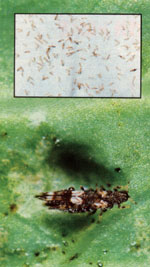

Here's the fourteenth in a series of articles that will help you tell friend from foe in your garden.
Part XIV: Thrips
One of the most common pests found on flowers, vegetables, and fruit has one of the least commonly known names in the insect world . . . thrips . (One thrips or a hundred, the s stays on.) Perhaps this creature has been able to maintain a certain degree of anonymity because of its minute size; unless your eyes are exceptionally sharp, you'll need a magnifying glass just to spot a thrips.
Under magnification, thrips aren't easily confused with other tiny garden pests. In addition to their slim bodies and brown, black, or yellow coloration, thrips have unusually slender wings fringed with microscopic hairs. Indeed, the name of the order to which the various species of thrips belong (Thysanoptera) means "fringed wings."
If you spot one thrips, you'll likely spot dozens or even hundreds; they're sociable little creatures. Several generations of thrips may hatch annually, and with the help of mild winter and spring temperatures, thrips populations can easily build to infestation proportions.
These Lilliputian plant feeders dine by rasping their host plant's epidermis until it weeps, then sucking the juices. This abrasive manner of feeding results in stippling, streaking, and other forms of distortion of the host plant. For the most part, though, thrips damage is tolerable, often superficial rather than actually threatening to the health of the host plant.
There are a great many species of thrips that attack flowers, one of the most notorious being the citrus thrips (Scirtothrips citri), which leaves brown rings on the ends of fruit. These circular blemishes in no way diminish the quality of the fruit, but since American consumers have been conditioned to expect near-perfect-looking citrus, such discolored fruit is usually downgraded and processed for juice. For the home citrus grower, however, thrips damage is usually bearable.
The most destructive species of thrips are those that feed on foliage-and many species in this group are common in the home garden. The onion thrips (Thrips tabaci) attacks various alliums (onions, garlic, etc.) as well as carrots, beans, peas, and other vegetables.
The greenhouse thrips (Heliothrips haemorrhoidalis) and the banded greenhouse thrips (Hercinothrips femoralis) feed on a wide variety of vegetables and ornamentals. The former is cosmopolitan in distribution, occurring in greenhouses nearly everywhere, as well as out-of-doors in mild regions-while the banded species is primarily an outdoor pest in the western U.S.
But not all species of thrips are bad for your garden. In addition to the leaf and flower eaters, there are a few predatory species of thrips. These minute carnivores feed on other tiny-and often destructive-garden insects . . . including mites, aphids, scale insects, insect eggs, and even other thrips.
Since controlling thrips can be a formidable chore, it's often best just to ignore the scoundrels. If, however, large numbers of thrips are actually stunting your plants or otherwise adversely affecting their health, the insects should be washed off with a strong jet of water delivered with a garden hose. In fact, the water hose is one of the best thrips remedies around.
Another environmentally sound treatment is to dust the affected parts of a thrips-infested plant with diatomaceous earth. (If you can find it in your local nursery, buy the type sold especially for insect control, rather than the coarser grade used in swimming pool filtering systems.) Tobacco dust and sulfur powder have also been used with success against certain species of thrips, but in general neither seems to be as effective as diatomaceous earth.
If all else fails, you might have to resort to using a botanical insecticide such as pyrethrum or rotenone-either full strength or mixed with diatomaceous earth.
But those are all cures. An effective thrips preventive can be constructed by wrapping a collar of aluminum kitchen foil around the base of each plant so that it extends beyond the drip line. For larger flowers and shrubs, you can stake or hang foil-covered boards between and around the plants.
And that's the thrips story . . . they're occasionally good, more often bad, but rarely truly destructive. One special caution is in order, however: Thrips are very small and light-so when you stop to smell the roses, don't inhale too deeply!
|
 The banded greenhouse thrips (Hercinothrips femoralis) is one of several species that feed on the foliage of garden plants. Inset: Thrips dance about on a datura petal. |
While considered undesirable by many American consumers, most thrips damage to fruit?such as the dark ring around this navel orange?is merely cosmetic. |
This romaine lettuce leaf has been stippled by thrips. The dark spots on the silverfish patches are thrips excrement. |